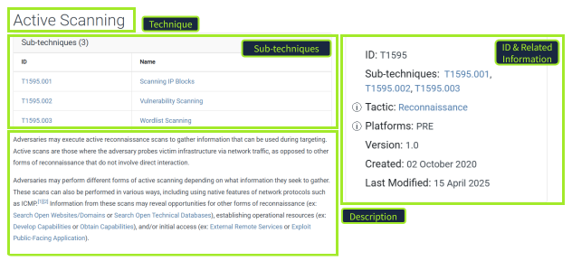
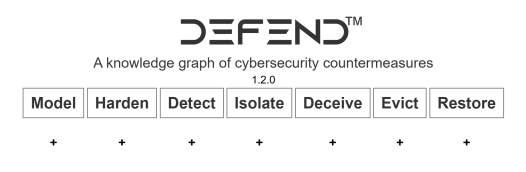

MITRE ATT&CK Framework¶
| Date Completed | 15/04/2026 |
| Difficulty | Easy |
| Room Link | tryhackme.com/room/mitre |
 Overview¶
Overview¶
This room introduces the MITRE ATT&CK® framework, a globally accessible knowledge base of adversary tactics, techniques, and procedures used to describe and understand threat actor behaviour. Working through a realistic scenario as a security analyst in the aviation sector, I applied ATT&CK to profile a known APT group, identify relevant techniques, and explore complementary frameworks including CAR and D3FEND.
 Key Learning Objectives¶
Key Learning Objectives¶
- Understand the purpose and structure of the MITRE ATT&CK® Framework
- Explore how security professionals apply ATT&CK in their work
- Use cyber threat intelligence (CTI) and the ATT&CK Matrix to profile threats
- Discover MITRE's other frameworks, including CAR and D3FEND
 Notes¶
Notes¶
Task 1: ATT&CK Core Concepts¶
I started by learning the three fundamental building blocks of the framework. A Tactic is the adversary's goal, the "why" of an attack. A Technique describes how that goal is achieved. A Procedure is the specific implementation, how the technique is actually executed in the wild. This consistent language is what makes ATT&CK so valuable across both threat intelligence and defensive operations, giving analysts a shared vocabulary when triaging alerts or writing detections.
The screenshot below shows the ATT&CK website entry for Active Scanning (T1595), a Reconnaissance technique, illustrating how techniques are structured alongside their sub-techniques, tactic, platform, and metadata.

Why ATT&CK Matters
ATT&CK bridges the gap between raw threat intelligence and defensive operations. By mapping alerts to specific techniques, analysts can prioritise incidents and communicate findings in a structured, universally understood way.
Task 2: Applying ATT&CK to a Real Scenario¶
The scenario placed me as a security analyst at an aviation company migrating infrastructure to the cloud. My task was to use the ATT&CK Groups section to identify an APT group known to target this sector and analyse its behaviour using the Navigator layer.
I identified the relevant threat actor, which has been active since at least 2013 and has a documented history of targeting aviation organisations. From there I examined which sub-techniques this group uses, focusing specifically on those relevant to a cloud environment and Office 365 accounts. I traced a specific tool linked to both the group and the sub-technique in question, then reviewed the recommended mitigation strategy, which emphasises removing inactive or unused accounts to reduce exposure.
Using ATT&CK Navigator
The Navigator layer is the fastest way to visualise which techniques a specific group uses and where your defensive gaps might be. Filtering by group gives you an immediate heat map of your risk surface.
Task 3: Detection Strategy¶
After identifying the threat, I looked up the corresponding detection strategy ID for monitoring abused or compromised cloud accounts. This connected the ATT&CK framework directly to actionable detection work, showing how intelligence findings translate into SOC priorities.
Task 4: D3FEND¶
I explored D3FEND (Detection, Denial, and Disruption Framework Empowering Network Defense), a complementary framework that maps defensive techniques using a common language. The framework organises countermeasures across seven high-level categories, as shown below.

A specific technique I studied was Credential Rotation (D3-CRO), which recommends the regular rotation of passwords, API keys, and certificates to prevent attackers from reusing stolen credentials.
D3FEND is designed to complement ATT&CK by providing the defensive counterpart to each offensive technique.
 Tools Used¶
Tools Used¶
| Tool | Purpose |
|---|---|
| ATT&CK Navigator | Visualising APT group technique coverage and defensive gaps |
| MITRE ATT&CK | Researching APT groups, techniques, mitigations, and detections |
 Key Takeaways¶
Key Takeaways¶
- ATT&CK gives analysts a shared language that makes it possible to turn raw threat intelligence into prioritised, actionable defensive work.
- The Groups section is an underused starting point for understanding who is likely to target your sector and exactly how they operate.
- Mitigations and detections are tied directly to techniques, so moving from "we were targeted" to "here is what we should monitor and block" is a structured, repeatable process.
- D3FEND complements ATT&CK by mapping the defensive side, making it easier to design layered controls rather than reacting to individual alerts.
- Cloud migrations increase the attack surface in specific, predictable ways. Cross-referencing your environment changes against ATT&CK cloud techniques before you migrate is a proactive habit worth building.